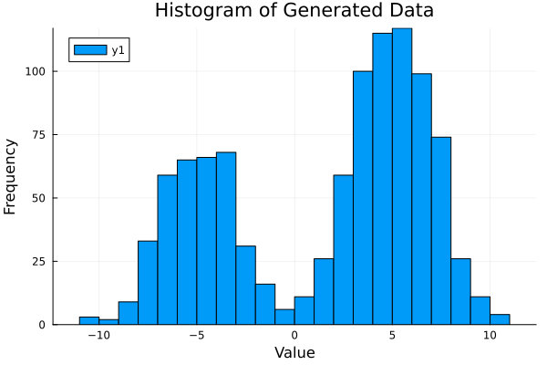
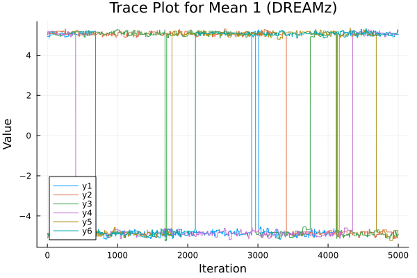

Sampling from multimodal distributions
Let's say you have a multimodal distribution, for example a mixture of two Gaussians. DifferentialEvolutionMetropolis implements differential evolution MCMC samplers (including deMC-zs and DREAMz) that are designed to sample from such distributions efficiently. Roughly these samplers work by generating new proposals based on many separate chains (or a history of sampled chains). In theory this allows the sampler to easily jump between modes of the distribution.
Multimodal Distributions
First we need to implement a multimodal problem. We will assume that our data is generated by a mixture of two Gaussians with means 5 and -5 and a 65% bias towards the positive value. Then the distributions of the means will be multimodal and highly correlated with the weights (the probability of picking either distribution). We can implement this using the Distributions package.
using Distributions, Random
mean = 5.0
std = 2.0
p = 0.65
dist = MixtureModel([
Normal(mean, std),
Normal(-mean, std)
], [p, 1 - p]);
#generate our data
Random.seed!(1234)
data = rand(dist, 1000)
# setup our log density
struct MixtureNormal{
M <: Distributions.ContinuousUnivariateDistribution,
Σ <: Distributions.ContinuousUnivariateDistribution,
P <: Distributions.ContinuousUnivariateDistribution
}
#data
data::Vector{Float64}
#priors
μ_prior::M
σ_prior::Σ
p_prior::P
end
#initialize the model
model = MixtureNormal(
data,
Normal(0, 10.0), #normal on μ
Normal(0, 10.0), #half-normal on σ because σ > 0
Uniform(0, 1) #prior on mixture weight
)
# implement the log density function
function (problem::MixtureNormal)(θ)
(; μ, p, σ) = θ
ld =
#priors
logpdf(problem.σ_prior, σ) +
logpdf(problem.p_prior, p) +
sum(logpdf.(problem.μ_prior, μ))
#likelihood (generated using Distributions.MixtureModel)
ll_model = MixtureModel(
[
Normal(μ[1], σ),
Normal(μ[2], σ)
], [p, 1 - p]
)
for i in axes(problem.data, 1)
ld += logpdf(ll_model, problem.data[i])
end
return ld
end
# to visualize our data
using Plots
plot(histogram(data, bins = 30, xlabel = "Value", ylabel = "Frequency", title = "Histogram of Generated Data"))
We can also transform our log density function, so we can provide real-valued inputs.
using TransformedLogDensities, TransformVariables
# μ is real-valued, p is constrained to [0, 1], σ is positive
transformation = as((μ = as(Array, 2), p = as𝕀, σ = asℝ₊))
transformed_ld = TransformedLogDensity(transformation, model)TransformedLogDensity of dimension 4Sampling with DifferentialEvolutionMetropolis
Now let's use DifferentialEvolutionMetropolis to sample from this multimodal distribution. Here we use the DREAMz sampler, which is well-suited for exploring complex, multimodal spaces. The transformed log-density must be wrapped with AbstractMCMC.LogDensityModel.
using DifferentialEvolutionMetropolis, AbstractMCMC
model = AbstractMCMC.LogDensityModel(transformed_ld)
# Sample using DREAMz taking 5000 iterations
dreamz = DREAMz(model, 5000; n_chains = 6, progress = true);DEMOutput{Float64}
iterations: 5000
chains: 6
parameters: 4
log density: mean -2740.6, range (-2749.5, -2738.6)Other implementations of the differential evolution MCMC algorithm are available in DifferentialEvolutionMetropolis.jl, such as deMC and deMCzs, which can be used similarly.
Sampling until convergence
With MCMCDiagnosticTools loaded, the templates can run until the chains converge instead over a fixed number of iterations. DREAMz(model, epoch_size, epoch_limit; warmup_epochs = 5) first runs warmup_epochs warm-up epochs, then up to epoch_limit sampling epochs. In the sampling phase, R̂ is computed at the end of each epoch from the second half of the samples produced so far. Sampling stops when every parameter has an R̂ below maximum_R̂ (default 1.2), or after epoch_limit epochs. epoch_size determines how many iterations make up an epoch.
using MCMCDiagnosticTools
dreamz_converged = DREAMz(model, 1000, 20; n_chains = 6, maximum_R̂ = 1.05, progress = false)
size(dreamz_converged.samples)(19999, 6, 4)deMC and deMCzs take the same arguments. R̂ (currently) treats the chains as independent, which they are not, so it's advisable to run multiple ensembles from different starting positions and compare across ensembles. For a custom sampler scheme, pass r̂_stopping_criteria to sample in place of the number of iterations, as in Custom Scheme.
Other log-density inputs
An untransformed target implementing LogDensityProblems.logdensity, dimension, and capabilities can also be used. The target must be wrapped with AbstractMCMC.LogDensityModel. There is no requirement to use TransformedLogDensities.jl, but it is recommended for constrained or structured parameters, as it applies Jacobian corrections automatically.
using DifferentialEvolutionMetropolis, AbstractMCMC, LogDensityProblems, Random
struct StandardNormalTarget end
LogDensityProblems.dimension(::StandardNormalTarget) = 2
LogDensityProblems.capabilities(::Type{StandardNormalTarget}) = LogDensityProblems.LogDensityOrder{0}()
LogDensityProblems.logdensity(::StandardNormalTarget, θ) = -sum(abs2, θ) / 2
target = StandardNormalTarget()
result = DREAMz(AbstractMCMC.LogDensityModel(target), 100; rng = Xoshiro(123), n_chains = 8, n_burnin = 100, progress = false)DEMOutput{Float64}
iterations: 100
chains: 8
parameters: 2
log density: mean -0.97406, range (-5.4616, -0.006034)If using AbstractMCMC.sample directly, for example when using a custom sampler scheme, it is possible to pass the log-density directly, but it must either implement the LogDensityProblems interface or be a TransformedLogDensity.
custom_result = sample(Xoshiro(123), target, setup_de_update(), 100; n_chains = 4, progress = false)100-element Vector{DifferentialEvolutionMetropolis.DEMSample{Vector{Float64}, Vector{Vector{Float64}}}}:
DEMSample(4 chains, 2 parameters)
DEMSample(4 chains, 2 parameters)
DEMSample(4 chains, 2 parameters)
DEMSample(4 chains, 2 parameters)
DEMSample(4 chains, 2 parameters)
DEMSample(4 chains, 2 parameters)
DEMSample(4 chains, 2 parameters)
DEMSample(4 chains, 2 parameters)
DEMSample(4 chains, 2 parameters)
DEMSample(4 chains, 2 parameters)
⋮
DEMSample(4 chains, 2 parameters)
DEMSample(4 chains, 2 parameters)
DEMSample(4 chains, 2 parameters)
DEMSample(4 chains, 2 parameters)
DEMSample(4 chains, 2 parameters)
DEMSample(4 chains, 2 parameters)
DEMSample(4 chains, 2 parameters)
DEMSample(4 chains, 2 parameters)
DEMSample(4 chains, 2 parameters)Custom Scheme
The sampling algorithms can be further customized. For example, we could include snooker updates alongside the DREAMz-like subspace sampling.
You can also modify aspects of the implemented sampling, for example tell DREAMz to use non-memory-based sampling with DREAMz(...; memory = false), or you can define your own sampler scheme for more control over the sampling process.
This time we will use MCMCChains.jl to handle the output.
using MCMCChains
# Create a custom sampler scheme that randomly picks from the provided update types
custom_sampler = setup_sampler_scheme(
setup_subspace_sampling(), # a DREAM-like sampler that uses subspace sampling
setup_snooker_update(deterministic_γ = false), # a snooker update for better exploration
setup_de_update(); # standard DE update
w = [0.6, 0.2, 0.2] # weights for each update type
);
# Sample using AbstractMCMC.sample with custom stopping criteria
custom_results = sample(
model,
custom_sampler,
r̂_stopping_criteria;
check_every = 10000,
maximum_R̂ = 1.05,
n_chains = 4,
N₀ = 100, # want good exploration of the space
memory = true,
parallel = true,
annealing = true,
num_warmup = 10000,
memory_size = 5000,
memory_refill = true,
chain_type = MCMCChains.Chains
);
# A sampler scheme can also follow a deterministic pattern
custom_sampler = setup_sampler_scheme(
setup_subspace_sampling(),
setup_snooker_update(deterministic_γ = false),
w = 10 # 10 subspace proposals for every 1 snooker proposal
);Fixed order composite sampler, cycle of 11 iterations
10 × Adaptive subspace update(γ = 2.38 / sqrt(2δd), cr = adaptive over 3 values)
1 × Snooker update(γ = Uniform(0.8, 1.2))You can also define your own samplers for more specialized use cases by extending the abstract types.
Parallel tempering and annealing
n_hot_chains adds chains that target the log-density divided by a temperature T > 1, spaced up to max_temp_pt (default 2 * sqrt(dimension)). Hot chains cross low-density regions more easily, and both the differential evolution updates and swap updates pass their positions to the cold chains, which are the only chains returned. The templates add the swap update automatically when hot chains are present. With sample, include setup_swap_update in the scheme.
using DifferentialEvolutionMetropolis, AbstractMCMC, Distributions, LinearAlgebra, LogDensityProblems, Random
# two well-separated modes with equal weight
struct Bimodal end
LogDensityProblems.dimension(::Bimodal) = 2
LogDensityProblems.capabilities(::Type{Bimodal}) = LogDensityProblems.LogDensityOrder{0}()
LogDensityProblems.logdensity(::Bimodal, x) = logpdf(MixtureModel([MvNormal([-6.0, 0.0], I), MvNormal([6.0, 0.0], I)]), x)
model = AbstractMCMC.LogDensityModel(Bimodal())
result = deMC(model, 2000; rng = Xoshiro(1), n_chains = 6, n_hot_chains = 4, max_temp_pt = 20.0, n_burnin = 2000, progress = false)
size(result.samples) # (iterations, cold chains, parameters)(2000, 6, 2)With annealing = true, every chain starts at max_temp_sa and cools linearly to its final temperature over annealing_steps (default num_warmup).
Parallel Sampling
If your log-density function is relatively slow, it may be beneficial to parallelize it. There are two levels of parallelism possible:
- Across independent ensembles:
MCMCSerial(),MCMCThreads(), orMCMCDistributed()argument tosampleschedules completely independent sampler runs. Handled entirely byAbstractMCMC.jl. For examplesample(model, sampler, MCMCThreads(), 1000, 3; n_chains = 10)would draw 1000 samples from 3 completely separate ensembles each using 10 chains within the ensemble. The 3 ensembles would be run concurrently with multi-threading. - Within a DE ensemble: with
parallel = falsechains within the ensemble update sequentially, withparallel = truethey can be multithreaded and update in parallel. For examplesample(model, sampler, MCMCDistributed(), 1000, 3; n_chains = 10, parallel = true)would draw 1000 samples from 3 completely separate ensembles each using 10 chains within the ensemble. The ensembles would run in parallel usingDistributed.jl, while within each ensemble, updates are multithreaded.
Parallel sampling within an ensemble without a memory archive
It is currently not possible for the differential evolution based samplers to naively update in parallel, as each update acts as a Gibbs update to the ensemble. When memory = true, the chance that any update would have picked the current position of a chain tends towards 0% as the archive of past positions grows, so the bias from parallel evaluations drops.
To benefit from multiple cores when memory = false, the multiple-try algorithm can be used by setting n_tries > 1. This setting makes multiple proposals for each update and picks one weighted by density. Since these occur within one update, each log-density can be evaluated in parallel. HMC updates (and any custom update that does not depend on the positions of the other chains) do not read the other chains and still run in parallel regardless of memory.
using AbstractMCMC, DifferentialEvolutionMetropolis
# One interacting ensemble, threaded chain updates:
deMC(model, 1000; memory = true, parallel = true)
sampler = setup_de_update()
# Four independent ensembles, each containing eight interacting chains:
sample(model, sampler, MCMCSerial(), 1000, 4; n_chains = 8, parallel = true)
sample(model, sampler, MCMCThreads(), 1000, 4; n_chains = 8, parallel = true)
sample(model, sampler, MCMCDistributed(), 1000, 4; n_chains = 8, parallel = true)With the same seeded RNG and a deterministic log-density, all three ensemble schedules give identical chains with either parallel = true or parallel = false. For cheap log-densities, in-step multi-threading is usually slower than sequential evaluation. The sampler is thread-safe by using per-chain copies of shared resources, including the LogDensity, but it is the user's job to ensure that their LogDensity function supports concurrent evaluation.
When you have more threads than chains, n_tries gives each chain several candidate proposals per step (multiple-try Metropolis):
sample(model, setup_de_update(), 1000; n_chains = 8, n_tries = 4, parallel = true)Interpreting Results
Assessing Sampler Performance: ESS and R-hat
To evaluate how well your sampler is performing, you can compute the effective sample size (ESS) and the R-hat diagnostic. These metrics help you determine if your chains have mixed well and if your estimates are reliable.
- Effective Sample Size (ESS): This measures the number of independent samples your chains are equivalent to. Higher ESS values indicate more reliable estimates.
- R-hat Diagnostic: Also known as the Gelman-Rubin statistic, R-hat compares the variance within each chain to the variance between chains. Values close to 1 suggest good mixing and convergence; values much greater than 1 indicate poor mixing.
Below is an example of how to compute these diagnostics for the DifferentialEvolutionMetropolis samplers using MCMCDiagnosticTools:
using Statistics, MCMCDiagnosticTools
# Compute diagnostics for DREAMz results
ess_val = ess(dreamz.samples) ./ size(dreamz.samples, 1)
rhat_val = maximum(rhat(dreamz.samples))
println("DREAMz diagnostics:")
println(" ESS per iteration: $ess_val")
println(" R-hat: $rhat_val")
# example trace plot
plot(dreamz.samples[:, :, 1], xlabel = "Iteration", ylabel = "Value", title = "Trace Plot for Mean 1 (DREAMz)")
Summarizing Posterior Samples
Once you have confirmed good mixing and convergence, you can summarize your posterior samples. For each parameter, you may want to compute the median and a credible interval (such as the 90% interval):
#need to transform the samples to original space, there is currently no nice way to do this
custom_results = cat([dreamz.samples[:, c, :] for c in axes(dreamz.samples, 2)]...; dims = 1)
for it in axes(custom_results, 1)
transformed_values = transform(transformation, Array(custom_results[it, :]))
custom_results[it, :] .= [transformed_values.μ..., transformed_values.p, transformed_values.σ]
end
#median for variance
med = median(custom_results[:, 4])
q05, q95 = quantile(custom_results[:, 4], [0.05, 0.95])
println("Standard deviation: posterior median = $med, 90% CI = ($q05, $q95)")
println("True standard deviation: $std")
#not so sensible for p or means
med = median(custom_results[:, 1])
q05, q95 = quantile(custom_results[:, 1], [0.05, 0.95])
println("Mean 1: posterior median = $med, 90% CI = ($q05, $q95)")
println("True mean: $(mean)")
#visualize the posteriors, expect multimodal distributions
plot(histogram(custom_results[:, 1], bins = 30, xlabel = "Mean 1", ylabel = "Frequency"), histogram(custom_results[:, 2], bins = 30, xlabel = "Mean 2", ylabel = "Frequency"), histogram(custom_results[:, 3], bins = 30, xlabel = "Probability", ylabel = "Frequency"), layout = (3, 1))
#covariance
plot(scatter(custom_results[:, 1], custom_results[:, 3], xlabel = "Mean 1", ylabel = "Probability of Normal 1"), scatter(custom_results[:, 1], custom_results[:, 2], xlabel = "Mean 1", ylabel = "Mean 2"), layout = (2, 1))
For more details, see the DifferentialEvolutionMetropolis Documentation and Customizing your sampler.